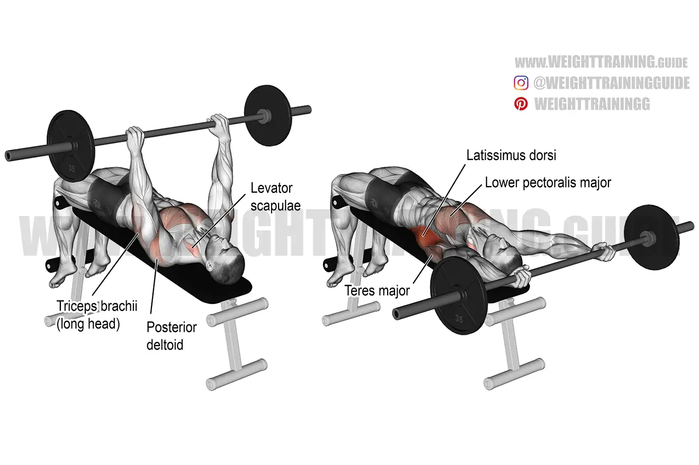
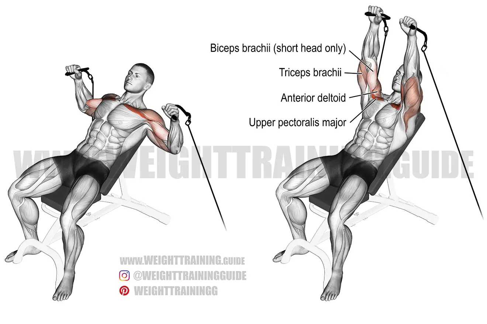

Warm Up
The session today is volume based
- Treadmill or Stationary Bike: 5-10 minutes- Dynamic Stretches: arm circles, leg swings, etc.
Exercise 1: Barbell Bench Press

- Reps: 4
- Tempo: 3-0-1
- Rest: 2-3 minutes
- This should be performed at around 80-83% of your one rep max.
- Lie on a flat bench with your feet flat on the floor.
- Hold the barbell with your hands slightly wider than shoulder-width apart.
- Lower the bar to your chest, then press it back up to the starting position.
Exercise 2: Incline Bench Press
Complementary to the flat bench

- Reps: 8
- Tempo: 3-0-1
- Rest: 2 minutes
- The weight should be heavy enough that you are reaching mechanical failure in the rep range.
- Set an adjustable bench to a 30-degree angle.
- Lie on the bench with your feet flat on the floor.
- Hold the barbell with your hands slightly wider than shoulder-width apart.
- Lower the bar to your chest, then press it back up to the starting position.
Exercise 3: Dumbbell Pullover
Important for building overall stability

- Sets: 4
- Reps: 10
- Tempo: Should be a slow eccentric.
- Rest time: 2 minutes
- Lie on a flat bench with your feet flat on the floor.
- Hold a dumbbell with both hands and extend your arms straight up.
- Slowly lower the dumbbell behind your head, then bring it back up to the starting position.
Exercise 4: Cable Flyes
This exercise is more lined up with the bodybuilding aspect of the split

- Sets: 3
- Reps: 12
- Tempo: 3-0-1
- Rest: 1-2 minutes
- Stand in the middle of a cable machine with your feet shoulder-width apart.
- Hold the handles with your palms facing forward.
- Bring your hands together in front of your chest, then slowly
Exercise 5: Tricep pushdowns (preferably with W bar)
This exercise will help with the lockout of the bench
- Sets: 4
- Reps: 8
- Tempo 3-0-4
- Rest: 2-3 minutes
- The goal of this exercise is to aid in the benchpress because the Triceps play a big role.
- Overtime with this exercise we want to build more mechanical tension.